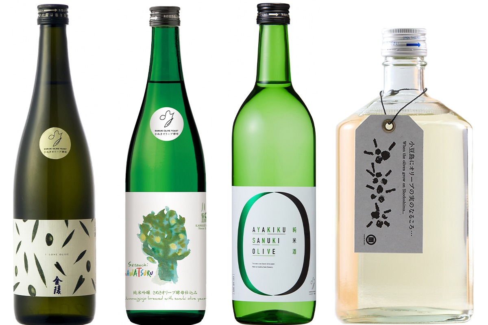
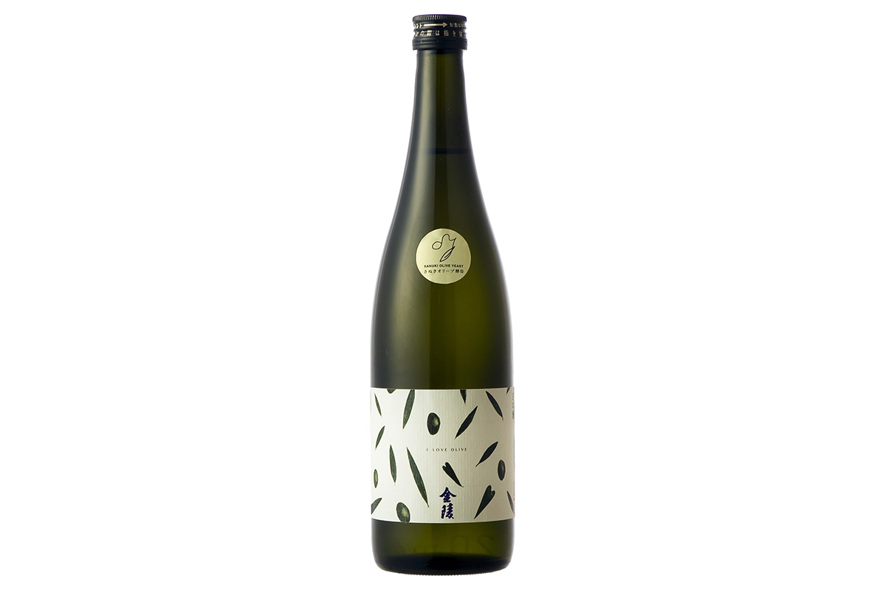
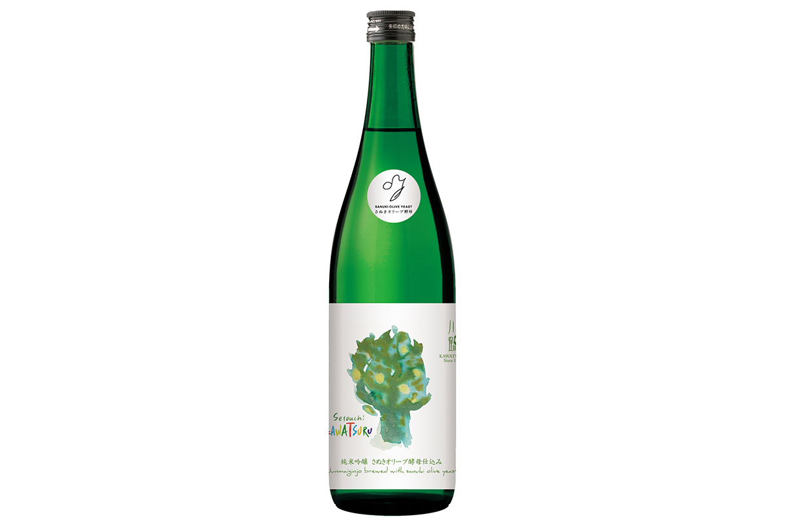
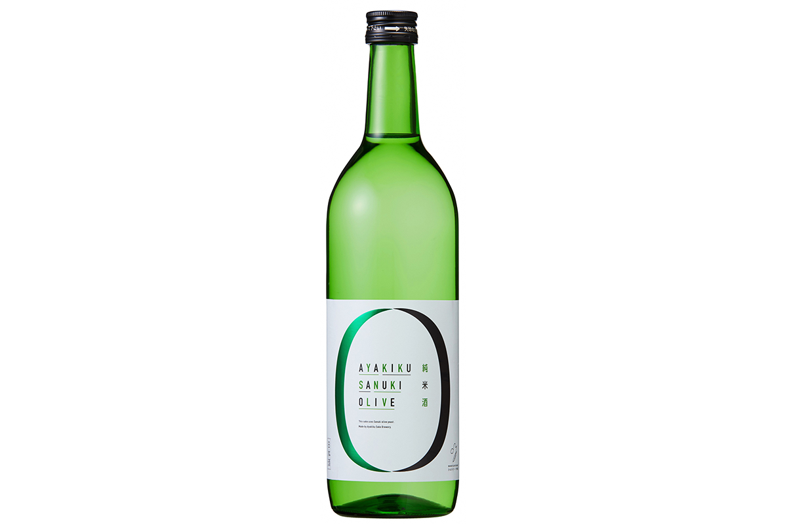
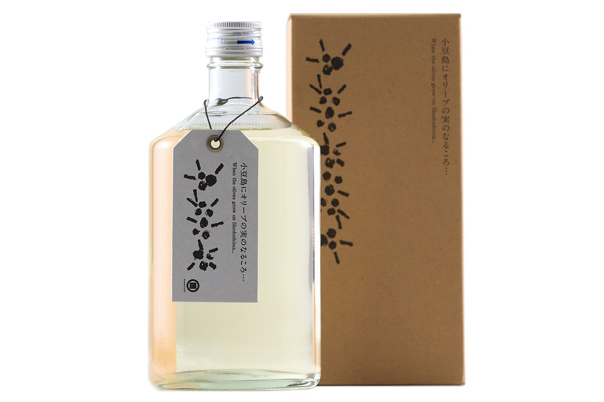
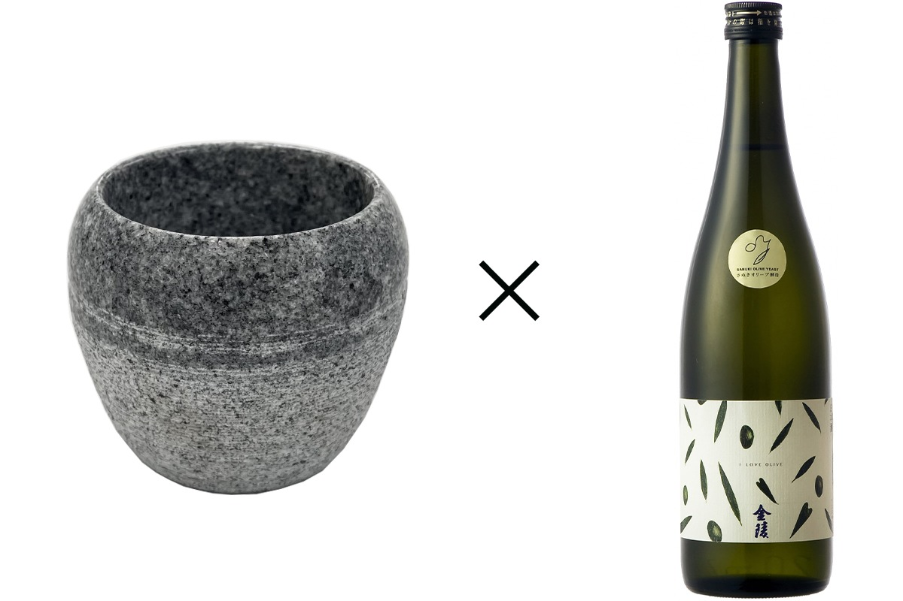
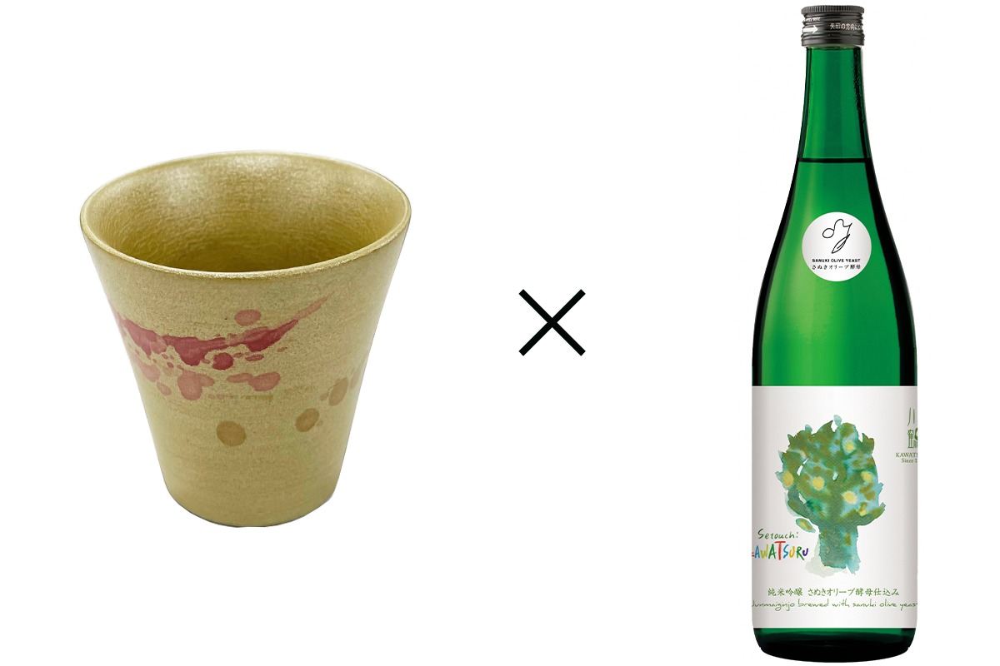
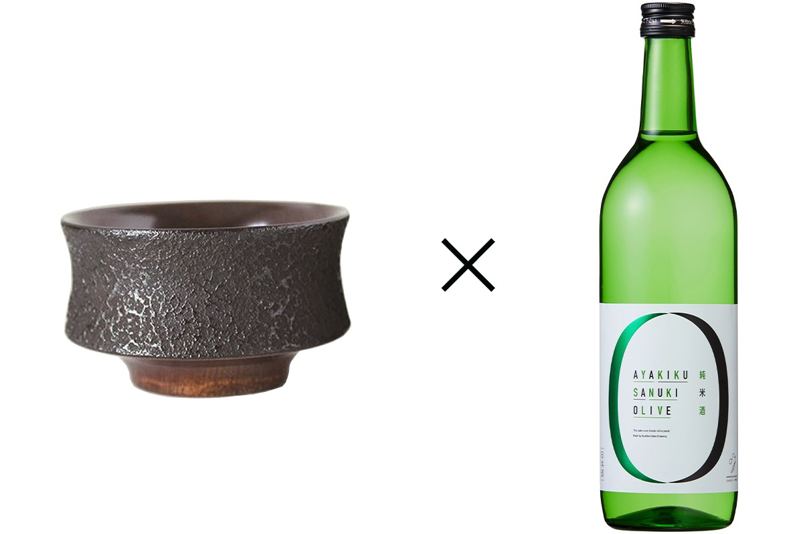
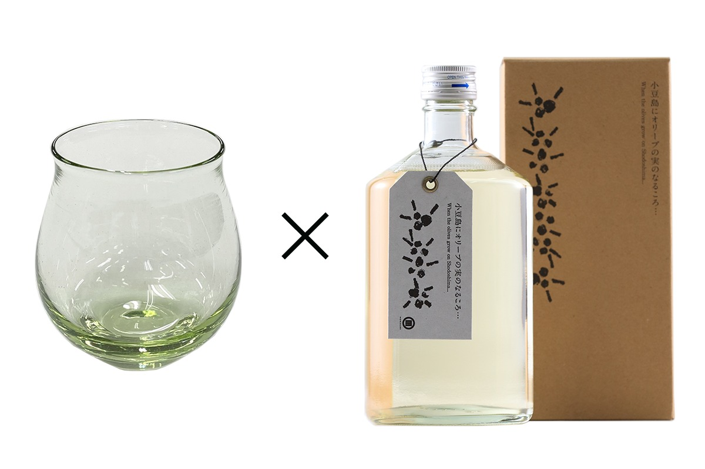

Префектура Кагава · сакэ · оливковые дрожжи
Сакэ из оливковых дрожжей: четыре сорта, сваренные целиком в Кагаве

Кагава научилась варить сакэ на дрожжах из собственной оливы: четыре винокурни, четыре сорта с тропической кислинкой. Рассказываем, что из этого вышло.
Общее дело
Дрожжи, выведенные всей префектурой
В 2018 году ассоциация производителей сакэ Кагавы вместе с институтом ферментации префектурного центра выделила из оливкового плода новые дрожжи: «сануки оливковые дрожжи», по старому имени префектуры. На них сварили четыре сорта, и сырьё во всех случаях кагавское: местные рис и вода. Вкус настраивали под деликатесы Сэтоути: оливкового хамачи (молодого желтохвоста) и оливковую говядину. На конкурсе продукции префектуры 2020 года сорта получили премию за выдающиеся достижения.
Четыре сорта
У каждого сорта свой характер
Кинрё: Сэтоути Олив Дзюммаи Гиндзё
Дрожжи здесь оливковые, а в аромате угадывается мускат: свежий тропический вкус хорошо идёт к стейкам и другим мясным блюдам, а также к европейской кухне.

Кинрё Сэтоути Олив Дзюммаи Гиндзё
- Цена
- 1 650 иен (720 мл)
- Крепость
- 15%
- Рис
- сануки ёймаи из Кагавы, полировка 58%
- Производитель
- Нисино Кинрё
- Телефон
- +81 877-73-4133
Setouchi KAWATSURU Дзюммаи Гиндзё на оливковых дрожжах
Сакэ бродило медленно, при низкой температуре, поэтому вкус получился лёгким, со свежей кислинкой и чистым финалом. В послевкусии проступает оливковая горчинка: сорт создан для блюд на оливковом масле, от пеперончини до салатов.

Setouchi KAWATSURU Дзюммаи Гиндзё
- Цена
- 1 716 иен (720 мл)
- Крепость
- 14%
- Рис
- осэто из Кагавы, полировка 55%
- Производитель
- винокурня Кавацуру
- Телефон
- +81 875-25-0001
- Сайт
- kawatsuru.com
Аягику Сануки Олив Дзюммаисю
Кислинка маракуйи и личи уравновешена здесь плотным рисовым умами, и сорт от этого только выигрывает. Пьётся легко и с японской кухней, и с французской, и с итальянской.

Аягику Сануки Олив Дзюммаисю
- Цена
- 1 430 иен (720 мл)
- Крепость
- 15%
- Рис
- осэто из Кагавы, полировка 60%
- Производитель
- винокурня Аягику
- Телефон
- +81 87-878-2222
- Сайт
- ayakiku.com
«Когда на Сёдосиме зреют оливки»
Сакэ пастеризуют прямо в бутылках, а затем долго выдерживают при 5 градусах мороза: так в бокале появляется вкус спелой оливы. Плотная сладость делает его мягким; особенно хорош сорт к прошутто, рыбе мёньер и другим солёным блюдам.

«Когда на Сёдосиме зреют оливки»
- Цена
- 2 145 иен (720 мл)
- Крепость
- 15%
- Рис
- осэто с Сёдосимы, полировка 60%
- Производитель
- винокурня Сёдосима Сюдзо (бренд MORIKUNI)
- Телефон
- +81 879-61-2077
- Сайт
- morikuni.jp
К сакэ нужна посуда
Каждому сорту своя чаша
Каждому сорту местные мастера подобрали чашу.
Камень адзи-иси и Кинрё

Лак и Setouchi KAWATSURU

Техника дзококу и Аягику

Стекло с оливой и сакэ с Сёдосимы

Ищите оливковое сакэ и посуду к нему в токийском антенна-шопе Сэтоути Сюнсайкан (фирменный магазин префектуры).
Антена-шоп Сэтоути Сюнсайкан
- Адрес
- Токио, район Минато, Симбаси, 2-19-10, здание Симбаси Марин, 1-й и 2-й этажи
- Телефон
- +81 3-3574-7792
- Часы работы
- 10:00–20:00
- Выходные
- нет